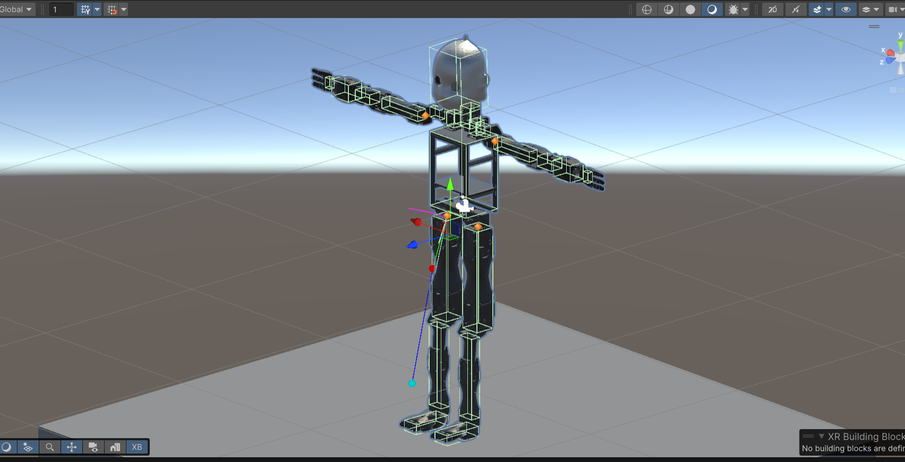
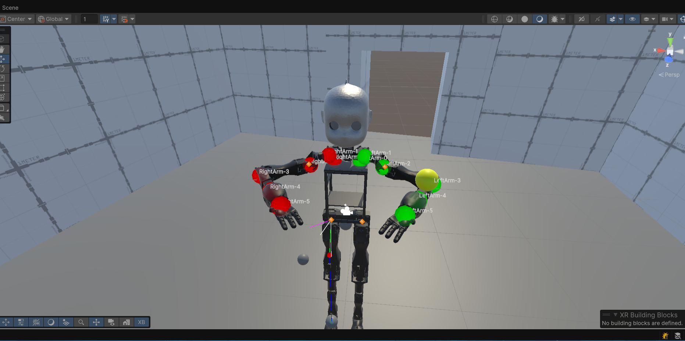
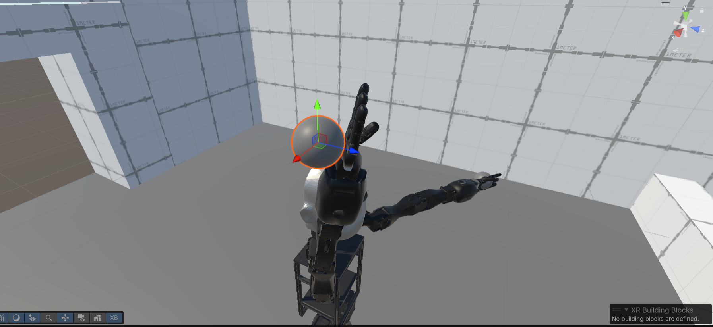
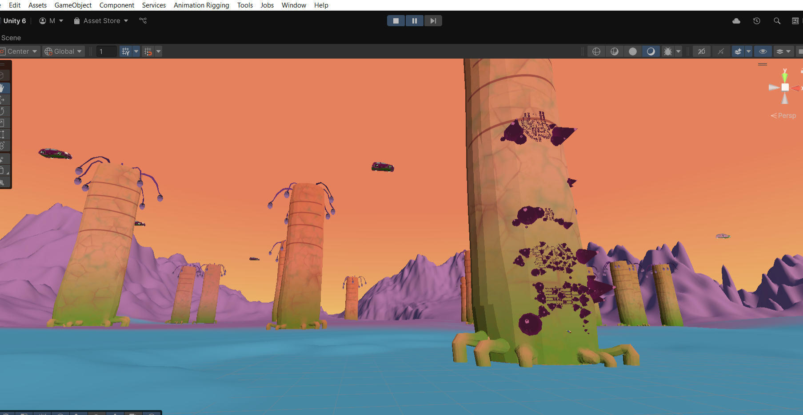
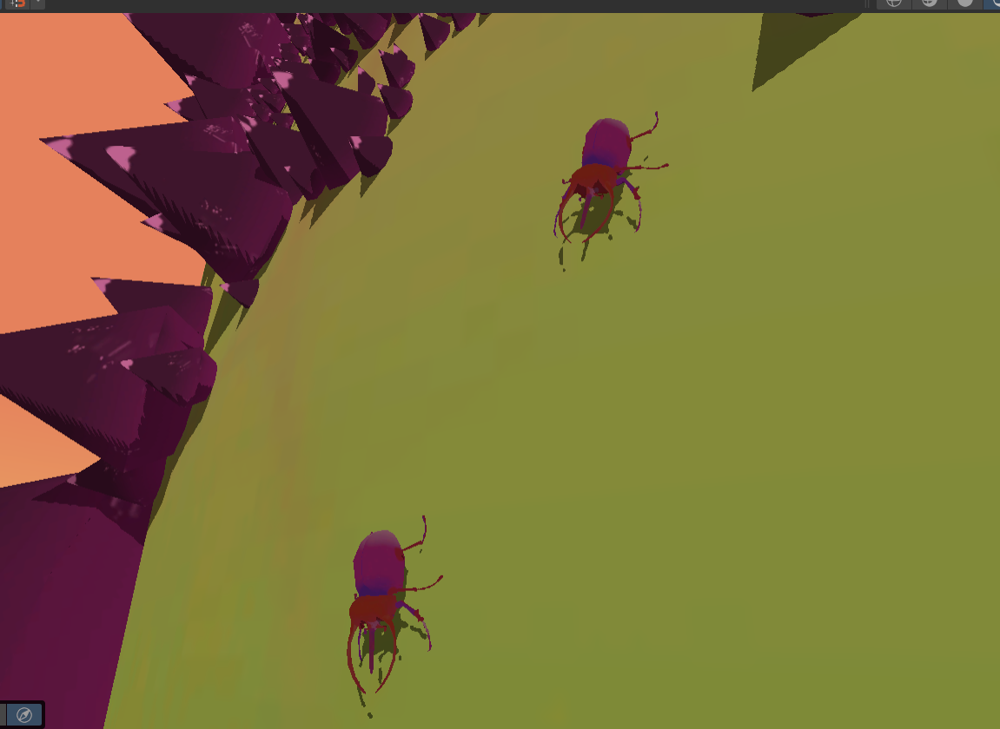
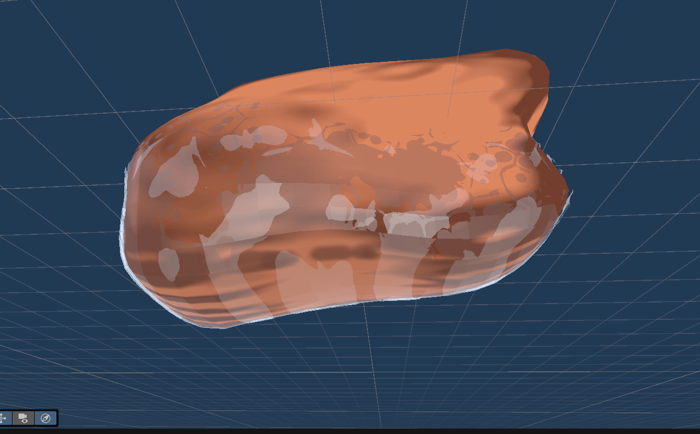
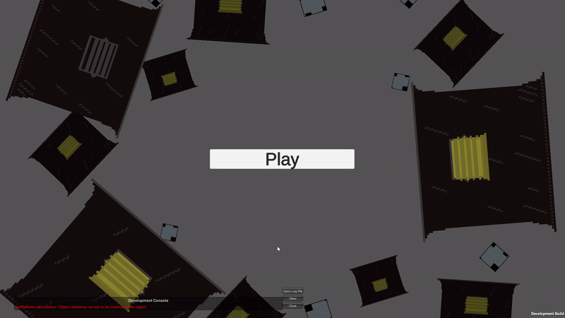

Bachelor Thesis
Developed a Unity-based VR simulation environment for training a humanoid robot digital twin.
Implemented real-time VR control, inverse kinematics, and physics-based interaction systems.
Developed recording and playback system for testing and movement analysis.
Technologies: Unity, C#, VR, IK, Physics Simulation.



Unity Solo Game Project (Prototype)
Developed a physics-based Unity game prototype focused on climbing and balance
mechanics.
Implemented custom mouse-based player movement and physics-driven climbing
systems.
Developed enemy insect behaviour with IK-driven leg animation and environmental
hazard systems.
Designed level progression, audio systems, visual effects, and overall player experience.
Technologies: Unity, C#, Physics Systems, AI Behaviour, Animation Systems.



University Game Jam Project (Team of 5)
Developed a dedicated gameplay level as part of a team-based game jam project.
Designed gameplay mechanics using a modular component-based architecture.
Implemented systems including player movement, combat, enemy AI, targeting,
inventory, spawning, health management, and UI.
Collaborated with team members using Git-based workflow.
Technologies: Unity, C#, Git
Game Jam Project
A small arcade-style game focused on timing jumps and quick reactions.
Gift Chimney Game
Arcade game created during a game jam. The goal is to throw gifts into chimneys.

VR Training Prototype
Experimental VR project focusing on interaction systems and physics-based movement.